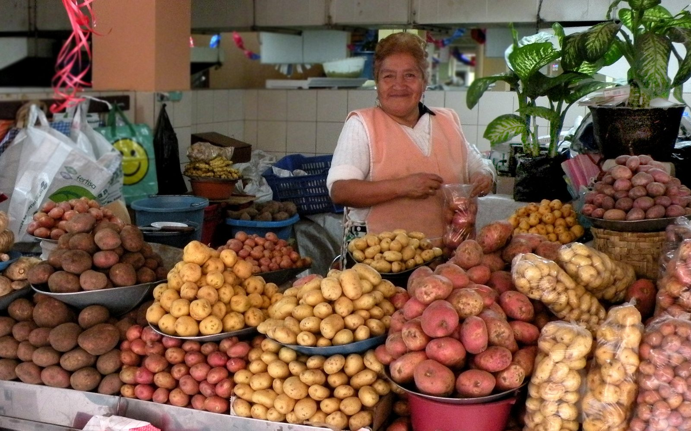

Postales de los cuatro mundos
Galería de fotos
Un recorrido visual por Ecuador en quince fotografías: filtra por temática y haz clic en cualquier imagen para apreciarla en grande.
Organiza tu vista
Explora por temática
Elige una categoría para mostrar únicamente esas fotografías. El filtro funciona con CSS puro, sin una sola línea de JavaScript.

¿Quieres verlo con tus propios ojos?
Una foto dice mucho, pero estar ahí lo cambia todo. Revisa nuestros paquetes turísticos o pide una propuesta personalizada sin costo.